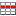
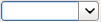
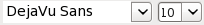
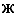
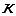
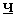
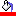
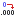
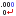

Панель инструментов
Открыть
- открывает
существующий шаблон.
Сохранить - сохраняет шаблон
на диске.
Печать - печать отчета на принтере.
 Просмотр - предварительный просмотр
страниц отчета.
Просмотр - предварительный просмотр
страниц отчета.
 Параметры страницы - открывает
диалог настройки параметров страницы.
Параметры страницы - открывает
диалог настройки параметров страницы.
Переносит отчет в
электронную таблицу OpenOffice или MS Excel.
Вырезать - вырезать выделенный
фрагмент отчета в буфер.
Копировать - копировать выделенный
фрагмент отчета в буфер.
Вставить - вставить фрагмент отчета
из буфера.
Отменить - отменяет предыдущее
действие.
Вернуть - возвращает отмененное
действие.
Вставить
строку - вставляет в отчет строку выбранной группы. При нажатии
на правую область кнопки появляется меню для выбора группы, при нажатии
на центр кнопки вставляется стока текущей выделенной группы. При
удерживании клавиши Shift появляется окно с запросом количества
вставляемых строк.
Вставить столбец - вставляет в отчет
новый столбец.
 Удалить строку - удаляет выделенные
строки.
Удалить столбец - удаляет выделенные
столбцы.
Сумма
по
столбцу - вставляет в шаблон отчета
итоговые результаты. Если признак вставляется в итог или заголовок
группы то суммация происходит по данным группы, если вставляется в итог
отчета, то по всему отчету. Вычисляется значение по данным поля или
переменной указанной в ячейке, если поле или переменная не указаны, то
вычисляется значение по столбцу. При нажатии на центр кнопки
вставляется подсчет суммы, при нажатии на правую область кнопки
появляется меню для выбора вида
итога:
Сумма -
суммирует данные.
Минимум
- находит минимальное значение.
Максимум
- находит максимальное значение.
Среднее
- находит среднее арифметическое значение.
Не повторять - помечает ячейки как
не повторяющие.
 Замена - в помеченных ячейках
значения заменяются значениями из таблицы замен. Таблицу замен можно
посмотреть и изменить в диалоге Настройки отчета в меню Файл | Свойства.
Замена - в помеченных ячейках
значения заменяются значениями из таблицы замен. Таблицу замен можно
посмотреть и изменить в диалоге Настройки отчета в меню Файл | Свойства.
Функция - открывает окно со списком
пользовательских функций.
 Переменные - открывает окно со
списком переменных отчета.
Переменные - открывает окно со
списком переменных отчета.
 DataSet ID
- идентификатор набора данных в выбранной ячейке.
 Сформировать - формирует отчет по
текущему шаблону.
Сформировать - формирует отчет по
текущему шаблону.
 - имя и размер шрифта в выделенных ячейках.
 Жирный - выбор жирного стиля шрифта.
 Курсив - выбор стиля курсив.
 Подчеркивание - выбор стиля
подчеркивание.
 Фон - выбор цвета фона выделенных
ячеек.
По левому краю - выравнивание в
ячейке по левому краю.
По центру - выравнивание в ячейке по
центру.
По правому краю - выравнивание в
ячейке по правому краю.
По ширине - выравнивание по ширине
ячейки.
По верху - выравнивание по верхнему
краю ячейки.
Ценрировать - выравнивание по центру
ячейки по вертикали.
По низу - выравнивание по нижнему
краю ячейки.
Авто высота - автоматическое
увеличение высоты строки по содержимому ячейки
Объединить ячейки - объединяет
выделенные ячейки.
Границы - открывает диалог для
настройки границ ячеек.
 Добавить (удалить) разрядность -
устанавливает разрядность для числовых данных в ячейке.